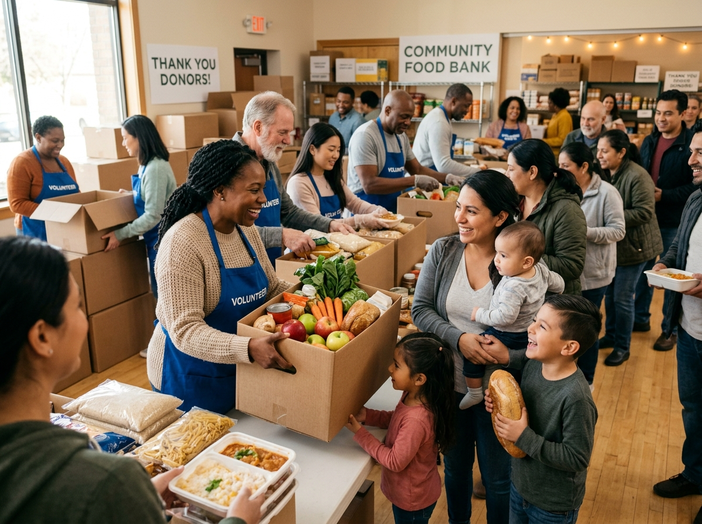
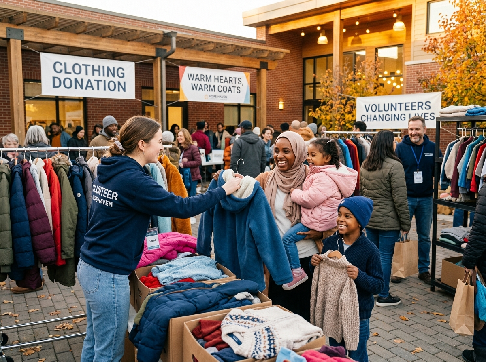
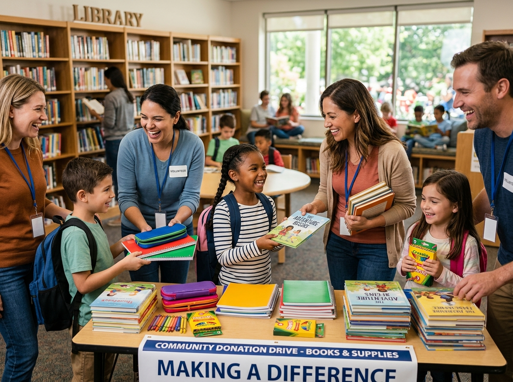
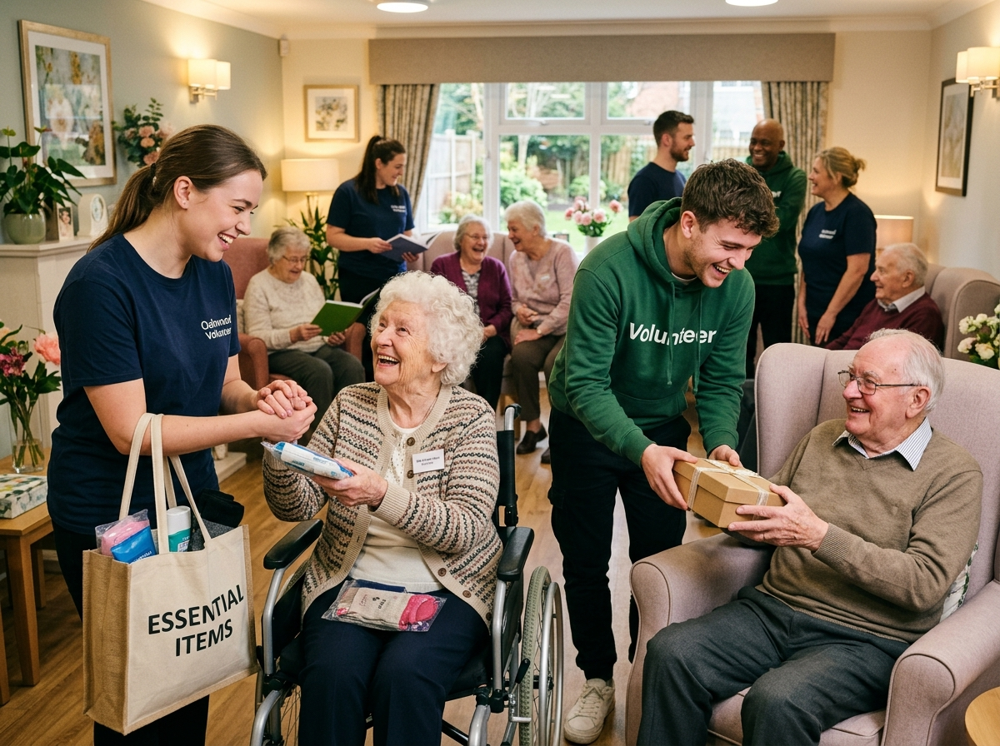

iVolunteer connects generous donors with verified NGOs, orphanages, and old-age homes. Donate essentials, volunteer your time, and see the impact you make.
A simple, transparent process from your doorstep to the people who need it most.
Select from food, clothes, books, medicines, or other essentials and fill in the details.
Pick a nearby NGO, orphanage, or old-age home. All organisations are verified for authenticity.
Follow your donation from pickup to delivery. Know exactly where your contribution goes.
Every item counts. Choose a category and make a difference today.
Real numbers from verified organisations. Every contribution is tracked and accounted for.
A glimpse into our on-ground food drives, clothing collections, library setups, and volunteer care visits.




Whether you have items to donate or time to volunteer, your contribution matters. Start today.